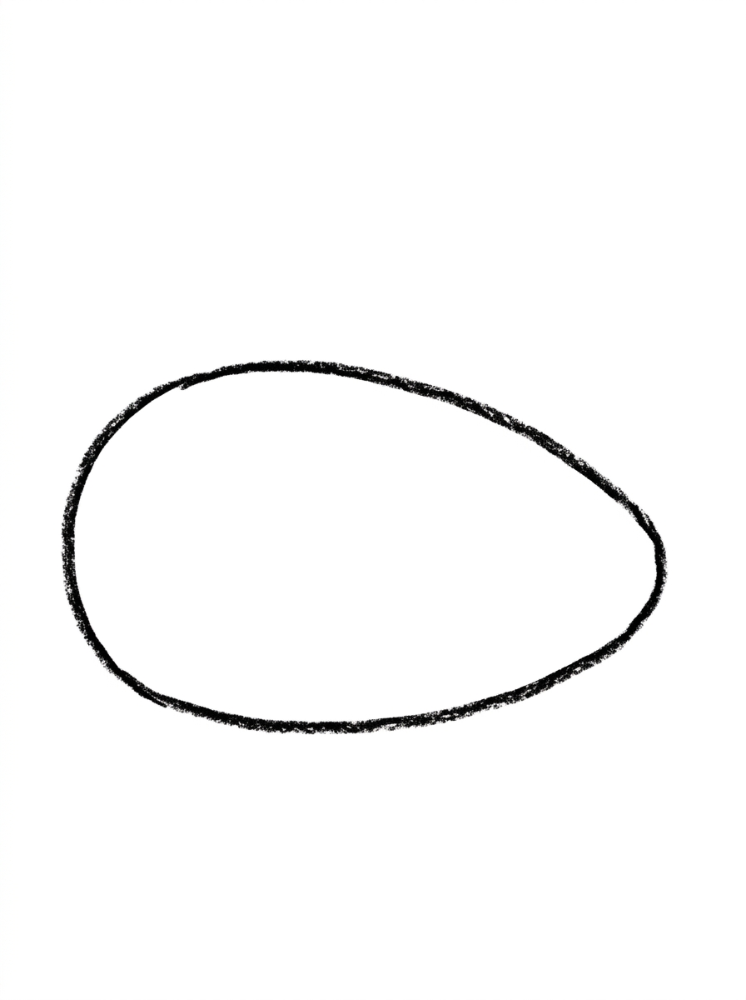
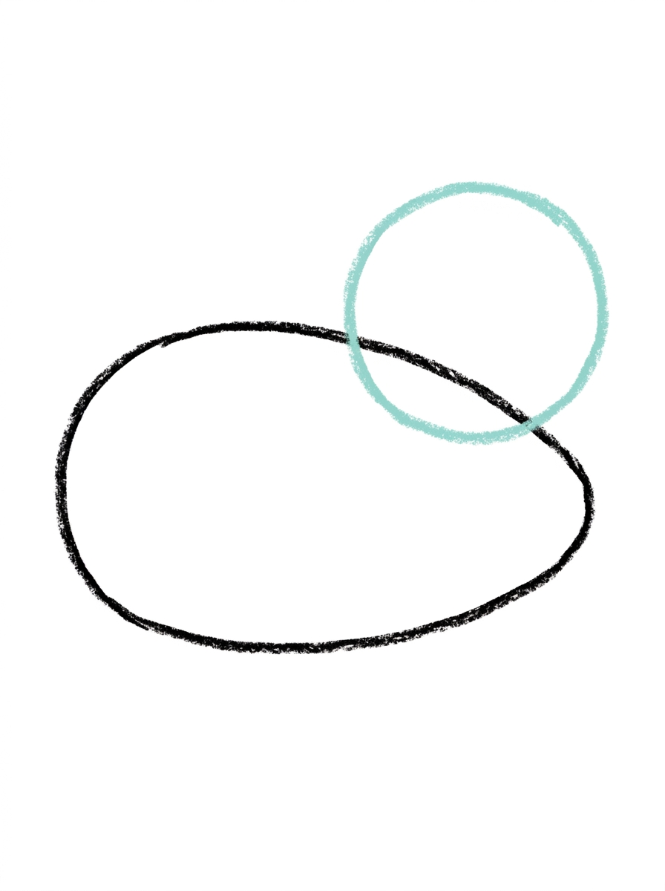
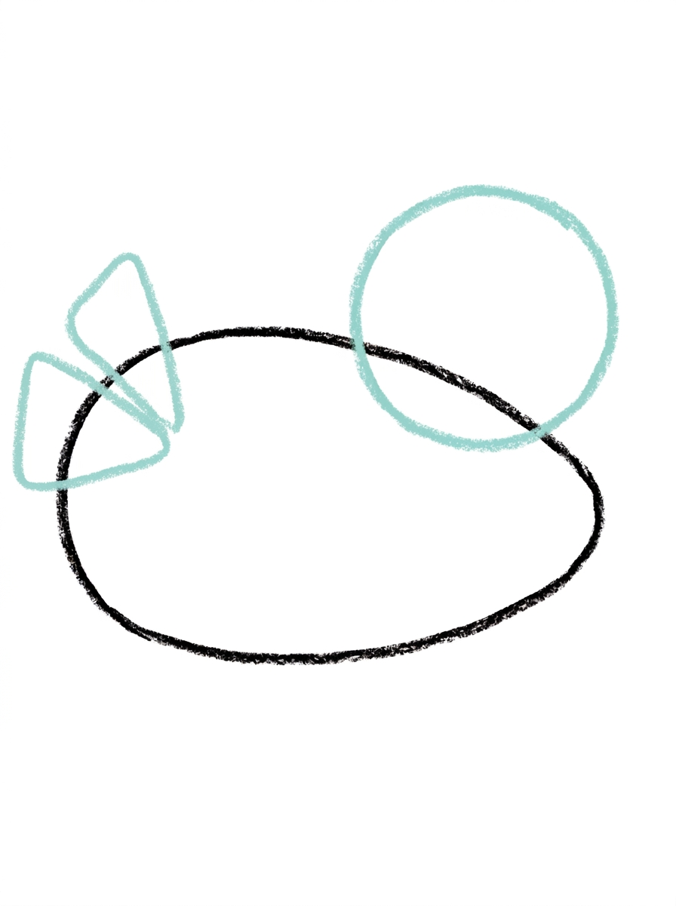
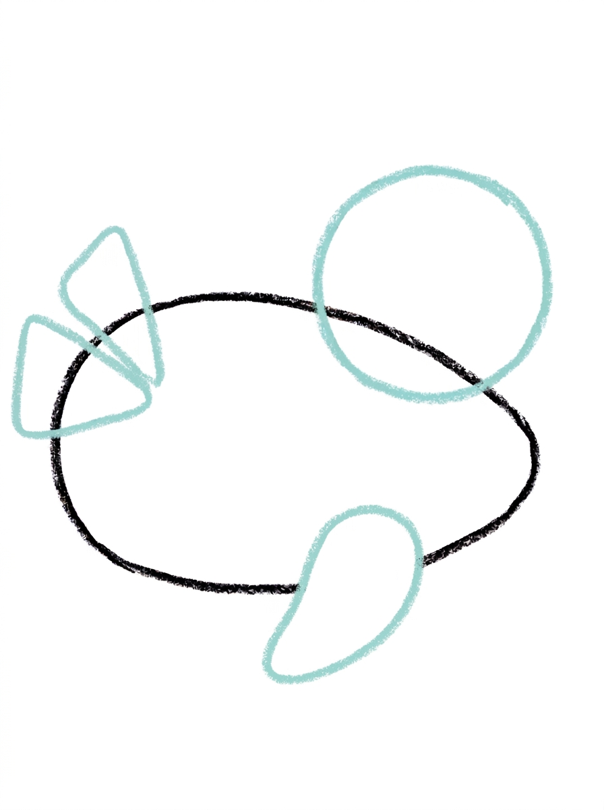
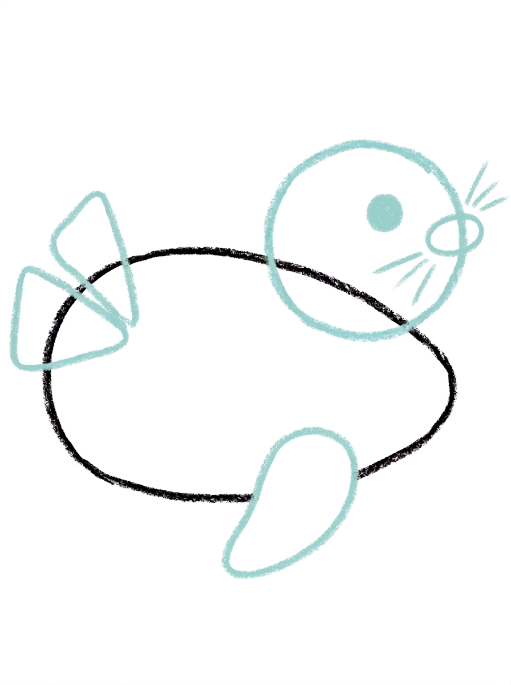
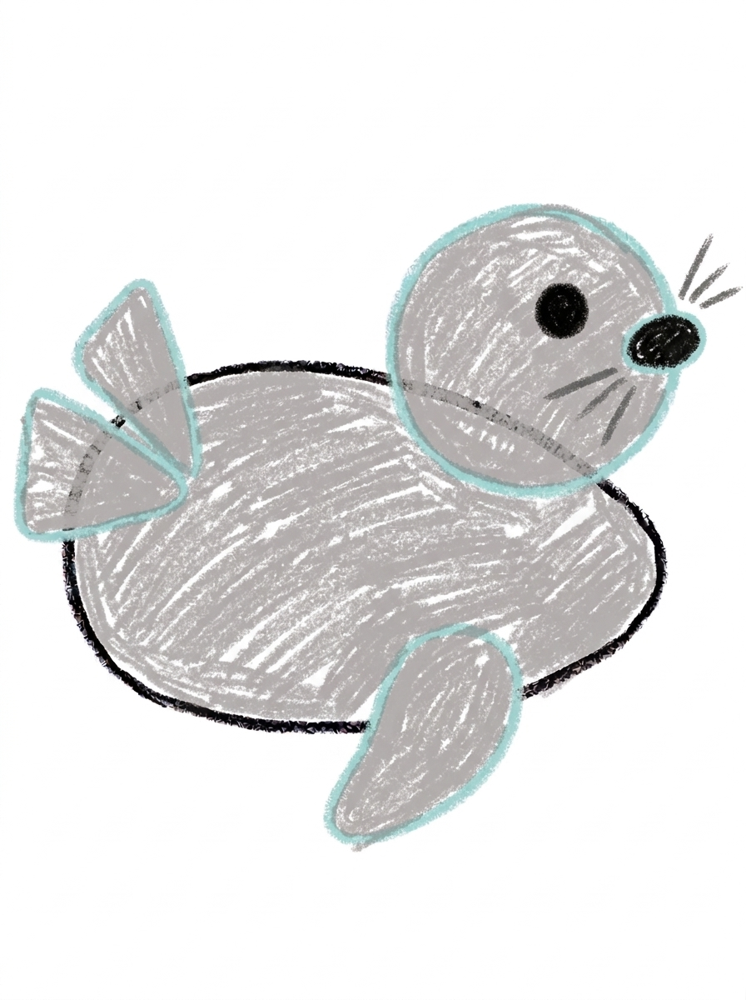

Seal Drawing for Kids How to Draw A Seal in 6 Easy Steps
Quick Answer
Draw a seal in six easy steps: a plump oval body, a round head at the front, two tail flippers fanning out the back, one front flipper underneath, then an eye, nose and whiskers. Color it soft gray. Made for ages 3 and up — free printable, no signup needed.
At a Glance
- Subject: How to draw a seal
- Ages: 3+
- Steps: 6 steps
- Time: ~15 min
- Difficulty: Easy
- Supplies: Paper, crayons
Seals look sleek and tricky, but this one is secretly simple — it's built from one plump oval, a round head, two fan-out tail flippers, and a face with whiskers you can count. If your child can draw an oval and a teardrop, they can draw this gentle seal.
✏️ Draw Your Seal in 6 Easy Steps
One step per box — this step by step seal drawing shows each new part in a different color so kids can see exactly what changed.
Step 1: The Body

Draw one big plump oval lying sideways — that's the seal's body.
Step 2: The Head

Add a circle overlapping the top of the front end of the body.
Step 3: The Tail Flippers

Add two rounded triangle shapes fanning out from the back end of the body.
Step 4: The Front Flipper

Add one teardrop shape under the front half of the body.
Step 5: The Face

Draw one dot for the eye, a small oval nose at the front of the head, and three whisker lines on each side of the nose.
Step 6: Color It In

Color the body, head, and flippers soft gray, the nose and eye black, and the whiskers dark gray. Great drawing!
📊 Seal Drawing by Age
Every age can join in — just adjust the job.
| Age | What they can do | Tip |
|---|---|---|
| 3-4 | Draw the big plump oval body and color the finished seal soft gray. | Draw the body long and low across the page — the tail flippers need room to fan out at the back. |
| 4-5 | Add the round head at the front, the two tail flippers fanning out the back, and the front flipper underneath. | The head circle overlaps the body's front end — that overlap is what joins the head to the body without a neck. |
| 6+ | Finish all six steps, including the face: one dot eye, a small oval nose, and three whisker lines on each side. | Counting the whiskers — three on the left, three on the right — turns the last detail step into a satisfying check-off. |
🖨️ Download Your Free Seal Drawing Printable
The printable lays out all 6 steps one per box, big enough for little hands — kids draw right alongside each step.
⬇️ Open Free Printable 🖨️ Print🎁 Free printable for ages 3+
🦭 Seal Ocean Page
Give your seal an ocean home: draw wavy water lines under its body, a flat rock for it to rest on, and a few bubbles or small fish shapes around it, then decide together who this seal is — a sleepy seal sunbathing after lunch, a playful seal who juggles beach balls, or a pup seal waiting for its mom. Write one sentence about the seal under the drawing (or dictate it for a grown-up to write) and the picture becomes a story your child can keep telling.
What You'll Need to Draw A Seal
All you need is a pencil, an eraser, and crayons or markers. For the colors in the tutorial, have soft gray ready for the body, head, and flippers, black for the nose and eye, and dark gray for the whiskers. Regular printer paper or a sketchbook both work.
What They're Learning
This tutorial practices plump ovals (the body), circles overlapping a bigger shape (the head), rounded triangles fanned in a pair (the tail flippers), and teardrops (the front flipper) — great smooth-shape practice. Kids also work on counting with a checkable total (three whiskers per side), side-view logic — why only one front flipper shows — and placement of a small face at the very front of a long body.
Make It Yours
Try a white baby seal using the same steps with a smaller body, a juggling seal with three circles above its nose, a spotted seal with soft dots along its back, or a sleeping seal by swapping the dot eye for a curved closed eye and adding a rock underneath. Two seals nose to nose make a sweet friendship card.
🛒 Our Favorite Drawing Supplies
These are the supplies we reach for in our own home — washable (because kids), quality paper, and enough colors to avoid fights.
As an Amazon Associate, MomYouNeedThis earns from qualifying purchases — at no extra cost to you.
💡 Seal Drawing Tips for Parents
Step 2's overlap is the one idea young kids haven't met yet: the head circle sits on top of the body's front end, sharing its space, rather than beside it. If your child draws the head floating apart from the body, show them the picture and let them nudge it in — seals have no necks, and that 'no neck' look is exactly what the overlap creates.
In step 5, draw the nose first, at the very front tip of the head, then the eye dot, then the whiskers — three short lines fanning from each side of the nose. Doing the whiskers last keeps them even, and counting three-and-three out loud turns it into a game instead of a chore.
🦭 Seals in the Real World
Seals are ocean animals built for cold water. A thick layer of fat called blubber keeps them warm, and their flippers make them fast, graceful swimmers — they twist through the water like underwater birds. On land it is a different story: seals bounce and wriggle on their bellies, which is why a resting seal looks a little like a banana.
A seal's whiskers are not decoration. They are super-sensitive feelers that can detect a fish's movement in dark water. Seal pups of some kinds are born with fluffy white coats. Ask your child whether their seal is a pup or a grown-up — the answer changes the whole personality of the drawing.
✋ Warm-Up: Smooth Swimmer Curves
Seals are one long smooth curve, so warm up curving. Draw ocean waves across a scrap page — gentle humps, over and over — then try one huge banana curve, the seal's whole resting shape in a single line. Curves drawn slowly wobble less than curves drawn fast; seals are in no hurry, and neither is this warm-up.
If the big curve comes out bumpy, there is a swimmer's fix: go over it once more with a slightly smoother line and let the first one become a shadow. Water hides a multitude of wobbles, and so does a second confident line.
📖 Give Your Seal a Story
A resting seal is a seal between adventures. Where has yours just swum from, and what is it watching from its rock — a boat, a whale, lunch? One or two dictated sentences under the drawing give the seal a day, and kids who give an animal a day tend to come back and give it a week.
The whale tutorial is the seal's giant ocean neighbor. Drawing the biggest animal in the sea next to one of the floppiest makes a wonderful pair — and a natural page two for the ocean story. The seal’s cold-water friends are the how to draw a penguin on the ice and the how to draw a fish below it.
❓ Seal Drawing FAQs
What is the easiest way to draw a seal?
Start with one big plump oval lying sideways for the body, then build on it one shape at a time: a round head at the front, two tail flippers fanning out the back, one flipper underneath, and finally the face. The six steps turn a 'hard' seal into a stack of easy shapes.
What age is this seal drawing for?
It's made for ages 3 and up. The shapes are all preschool-friendly — ovals, circles, and teardrops — and younger kids can do the body and coloring while older kids add the whiskers and flipper details themselves.
What supplies do we need?
A pencil, an eraser, paper, and crayons or markers. For colors you'll want soft gray for the body, head, and flippers, black for the nose and eye, and dark gray for the whiskers.
Is the printable really free?
Yes — every printable on MomYouNeedThis is 100% free, including this seal drawing tutorial. There is no signup, no email, and no catch — just download, print, and draw.
How do I print it?
Open the PDF and choose Print, then set the scale to 100% (sometimes called Actual Size) so the steps print at full size. The tutorial is designed for regular US Letter paper, and plain printer paper works perfectly.
How do I draw the seal's tail?
The seal's back end splits into two rounded triangle shapes that fan out side by side, like a mermaid's tail in two halves. Draw one, then its partner next to it, both pointing away from the body — together they read instantly as a seal's tail.
How many whiskers does the seal have?
Three on each side of the nose — six in total. They're short straight lines fanning out from beside the small oval nose at the front of the head, drawn in step 5 after the eye and nose so the face stays balanced.
How many flippers does the seal have?
Just one shows in this drawing — a single teardrop shape under the front half of the body. The seal is lying on its side view, so the far flipper is hidden behind the body, the same way only one of your arms shows when you lie down and face sideways.
📚 Keep Exploring
- ✏️ All 76 Drawing Tutorials 76 free step-by-step drawing tutorials for kids.
- 🌊 Ocean Coloring Free ocean coloring pages for kids.
- ✏️ Drawing Practice Free printable drawing pre-writing worksheet for toddlers.